🎬 Watch the video first
A silent video with captions builds the whole brain step by step. Pause, rewind, or jump to a chapter:
🚀 Your mission: earn 5 stars
Answer the quick checks in the guide. Each correct answer lights a star.
What you will build
- A picture of 5×5 squares (pixels). A dark square is 1, an empty square is 0.
- A “brain” made of 25 weights (one per square) and a bias. The brain adds up weight × pixel and gets a score.
- After every picture the brain checks its answer and nudges the weights. That nudging is learning.
- At the end the brain is tested on pictures it has never seen. Goal: 90% or more.
Before you start
- Excel on a computer (Excel for the web also works).
- Download the Starter file at the top of this page and open it.
- Yellow cells = you type. Blue cells = formulas (you type them, or they are already there).
0The idea in one minute▶ Watch this part 0:07
An AI does not “see” an apple. It sees numbers. Our brain gives every square a weight. Squares that appear in apples get a positive weight. Squares that appear in bananas get a negative weight.
Score = bias + (weight 1 × pixel 1) + (weight 2 × pixel 2) + … + (weight 25 × pixel 25). A big score means Apple, a small score means Banana. The probability is 1/(1+EXP(-score)): a score of 0 is 50%.
1Meet the workbook▶ Watch this part 0:39
The workbook has six sheets (tabs at the bottom):
| Sheet | What it is for |
|---|---|
| Pictures | 12 training pictures + 4 free slots for your own |
| Learn | the engine room: one row = the brain looks at one picture and corrects itself |
| Brain | the dashboard: learning rate, charts, what the brain looks at |
| Test | 10 pictures the brain has never seen |
| Draw | draw your own picture and ask the brain |
| Data | helper sheet (do not type here) |
2Look at the training pictures▶ Watch this part 0:39
- Open the Pictures sheet. Each picture has a title (Picture 1 …) and an answer in the top corner: 1 = Apple, 0 = Banana.
- Look at the apples. Which squares are dark in all apples? Look at the bananas. Which squares are dark in bananas but never in apples?
- Slots 13–16 are empty. You will use them at the end.
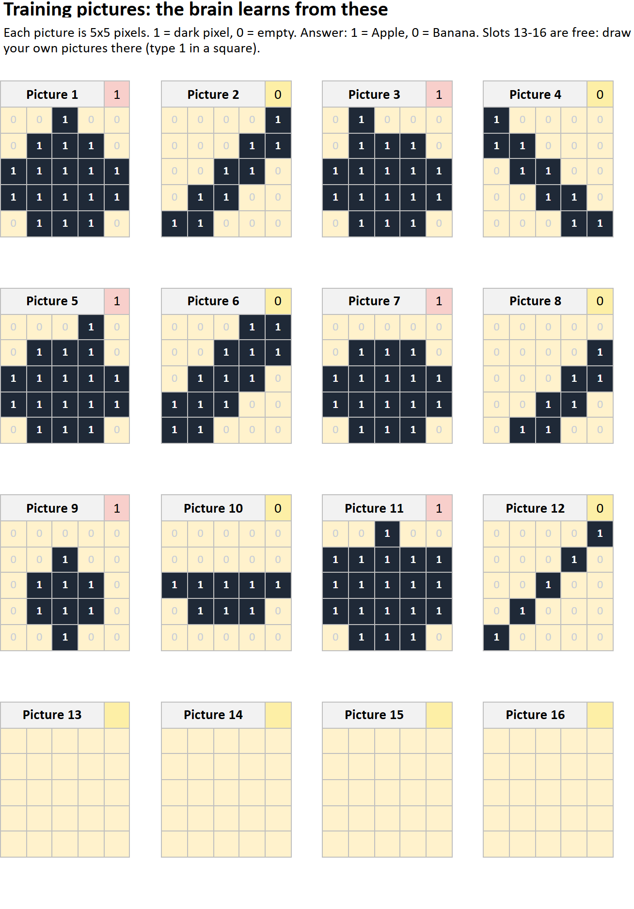
In the Pictures sheet, what does a 1 in a square mean?
3Teach the brain: type 5 formulas▶ Watch this part 0:52
Open the Learn sheet. Row 7 is the starting brain (all zeros). In row 8 the brain looks at picture 1. Click each cell and type (or click a formula to copy it):
Tip: click a formula below to copy it, then paste it into the cell.
| Cell | Formula | Meaning |
|---|---|---|
| F8 | =L7+SUMPRODUCT(M8:AK8,AL7:BJ7) | bias + sum of weight × pixel |
| G8 | =1/(1+EXP(-F8)) | probability that it is an Apple |
| K8 | =E8-G8 | answer − probability (how wrong) |
| L8 | =L7+$E$3*K8 | new bias = old bias + learning rate × error |
| AL8 | =AL7+$E$3*$K8*M8 | new weight 1 = old weight + learning rate × error × pixel |
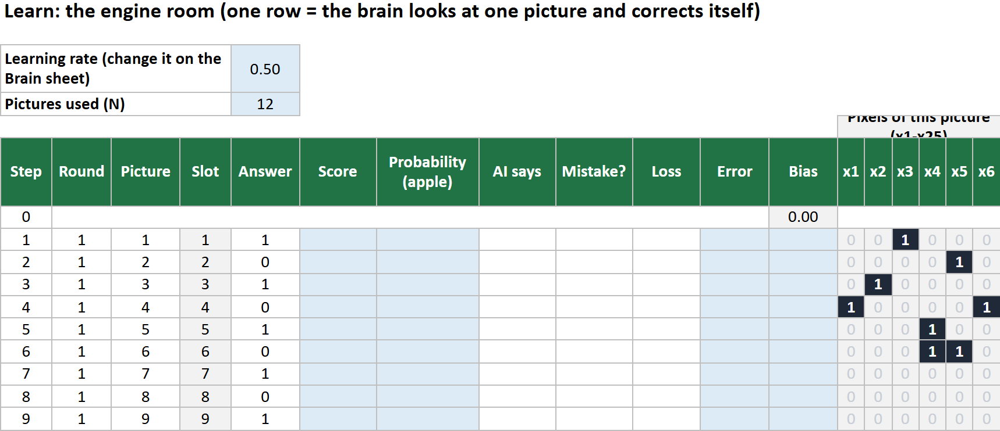
- Type the formula in F8, G8, K8 and L8. Press Enter after each.
- Type the weight formula in AL8. Then select AL8, grab the fill handle and drag right to BJ8 (25 weights).
- Now select F8 and drag across to BJ199… or easier: click F8, hold Shift, click BJ199, then press Ctrl+D (Fill Down).
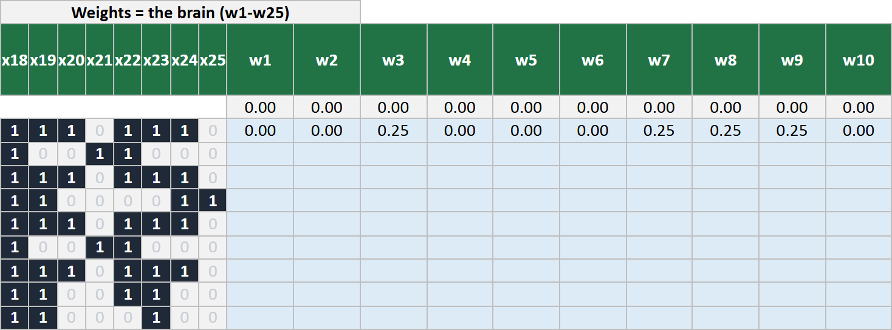
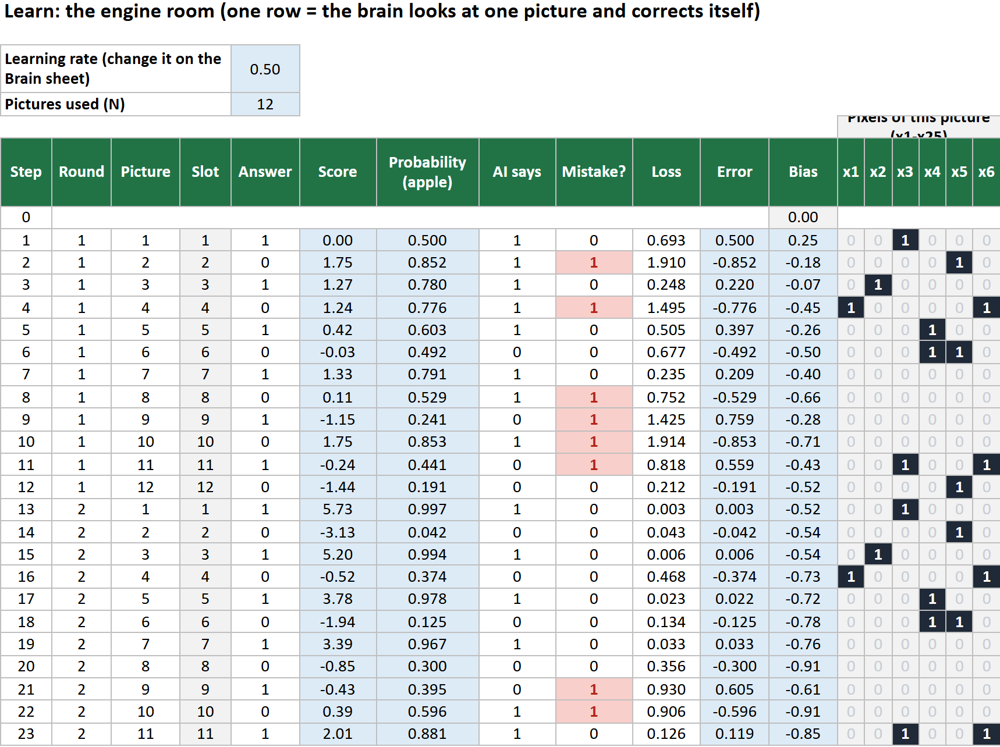
What does the brain do after a wrong answer?
4Watch it learn▶ Watch this part 2:17
- Open the Brain sheet. The two charts show mistakes in each round and loss (how wrong the brain is). Both should go down.
- Change the learning rate (yellow cell C4) to 0.05, then 0.5, then 5. Look at the charts each time.
- Which learning rate reaches 0 mistakes first? Which one is slowest?
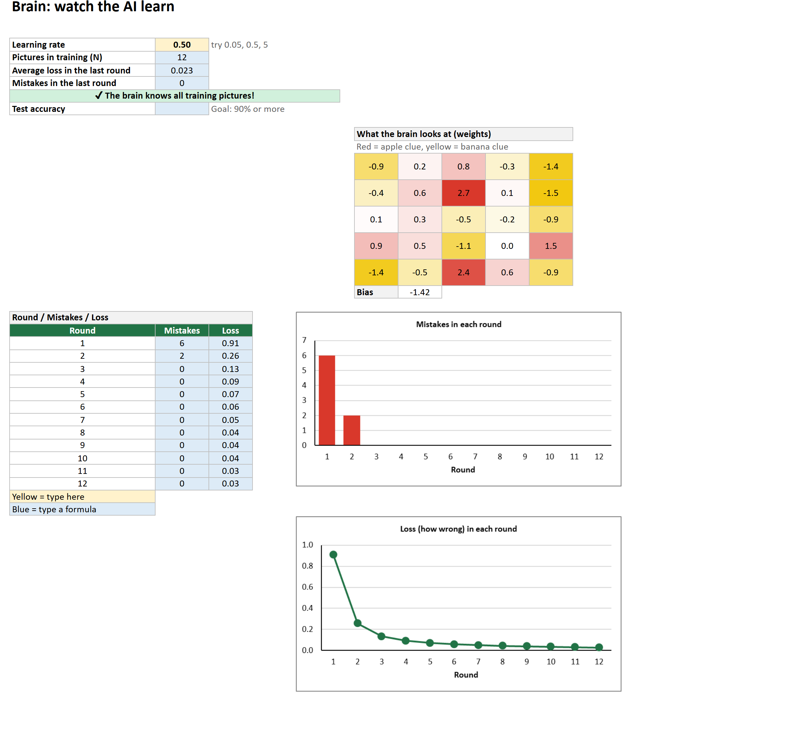
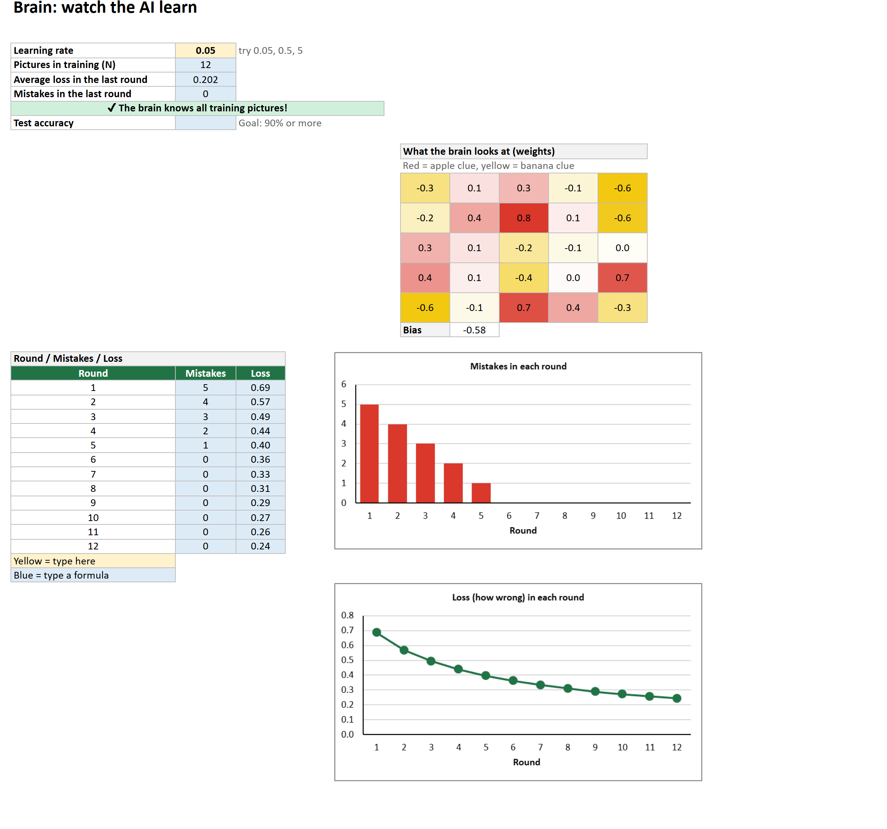
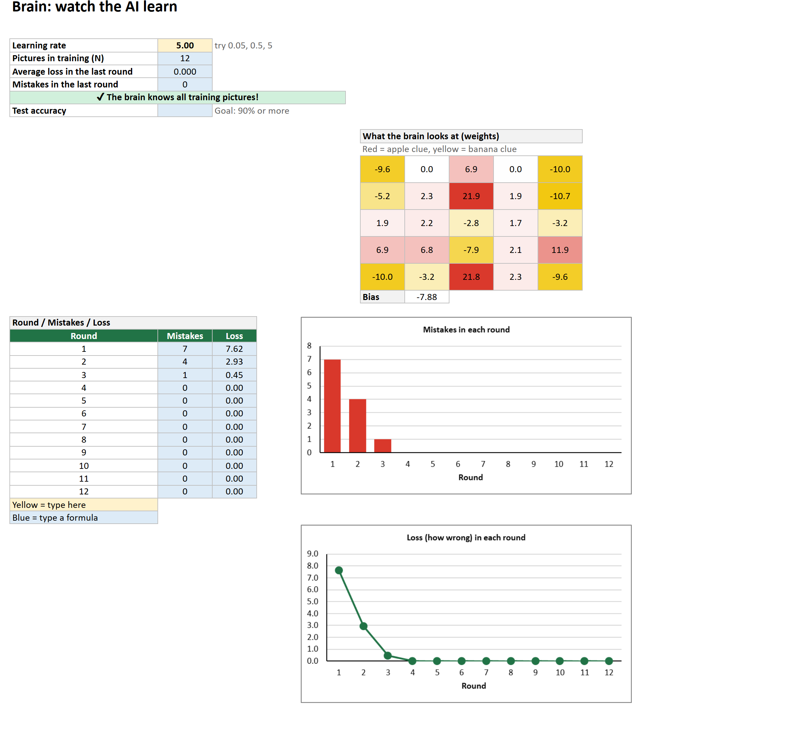
A learning rate that is too small means…
5What did the brain learn?▶ Watch this part 2:17
On the Brain sheet the 5×5 map shows the 25 weights. Red squares are clues for Apple. Yellow squares are clues for Banana. White squares do not matter.
- Compare the map with the pictures. Do the red squares match where apples are dark?
- Which square has the biggest weight? Why do you think so?
6Test the brain▶ Watch this part 2:52
Open the Test sheet. The 10 pictures are new. Type these formulas in row 4 and fill down to row 13:
| Cell | Formula | Meaning |
|---|---|---|
| C4 | ='Learn'!$L$199+SUMPRODUCT('Data'!D22:AB22,'Learn'!$AL$199:$BJ$199) | score of test picture 1 |
| D4 | =1/(1+EXP(-C4)) | probability |
| E4 | =IF(D4>=0.5,"Apple","Banana") | the brain's answer |
| F4 | =IF(B4=E4,1,0) | 1 if it is right |
| C16 | =COUNT(F4:F13) | how many pictures |
| C17 | =SUM(F4:F13) | how many right |
| C18 | =C17/C16 | accuracy (format as %) |
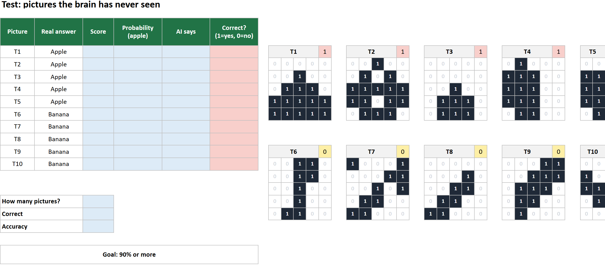
- Type the formulas in C4, D4, E4 and F4. Select C4:F4, drag the fill handle down to row 13.
- In C16, C17 and C18 type the three summary formulas. In C18 press % on the Home tab.
- Look at the pictures that are wrong (red in column F). What do they have in common?
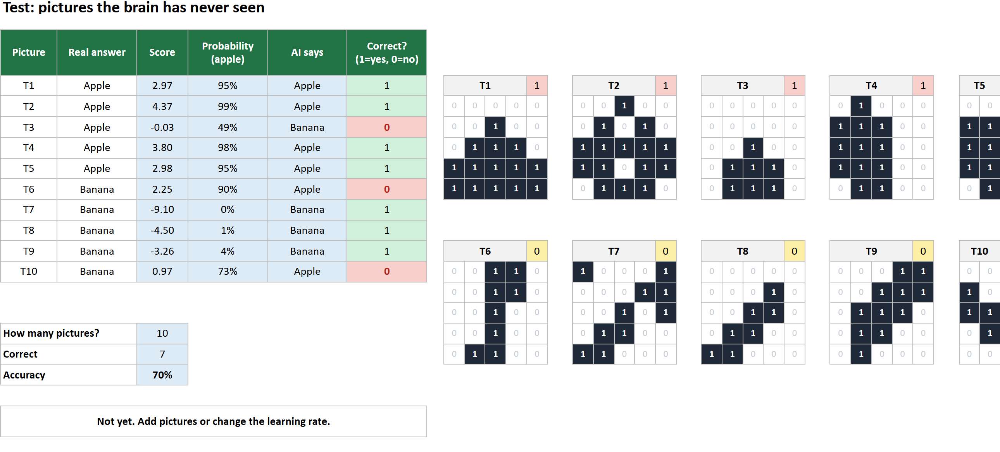
Why must the Test pictures NOT be in the training set?
7Draw your own picture▶ Watch this part 3:24
- Open the Draw sheet. Type 1 in squares to draw. Try an apple, a banana — and then a nonsense pattern like a checkerboard.
- Read what the brain says. Does it ever say “I don't know”?
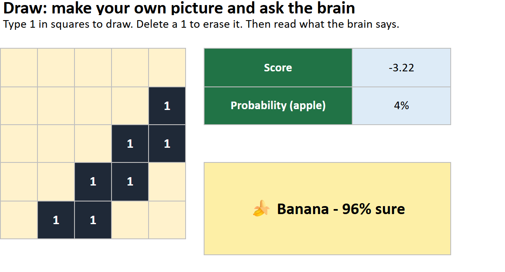
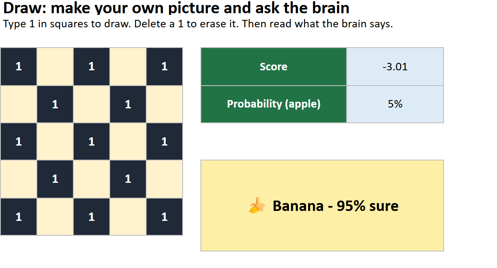
8The goal: reach 90%▶ Watch this part 3:38
Add training pictures so the brain meets more situations. Use the empty slots 13–16 on the Pictures sheet: type 1 in squares and put the answer (1 or 0) in the top corner.
- Draw your own variations: an apple moved down or left, a small apple, a banana turned upright, a banana moved.
- Do not copy the test pictures. If you copy them the brain has seen the answers and the test means nothing.
- Everything recalculates by itself. Watch the Test accuracy and the goal line.
Stuck? Try these 4 pictures (1 = dark square). Two apples and two bananas:
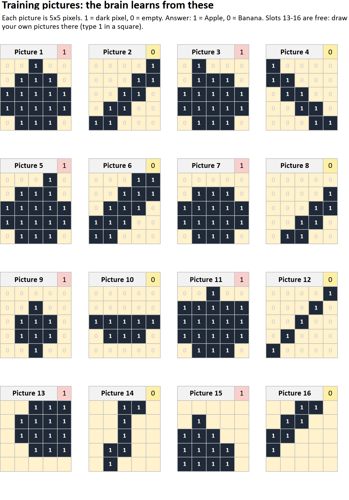
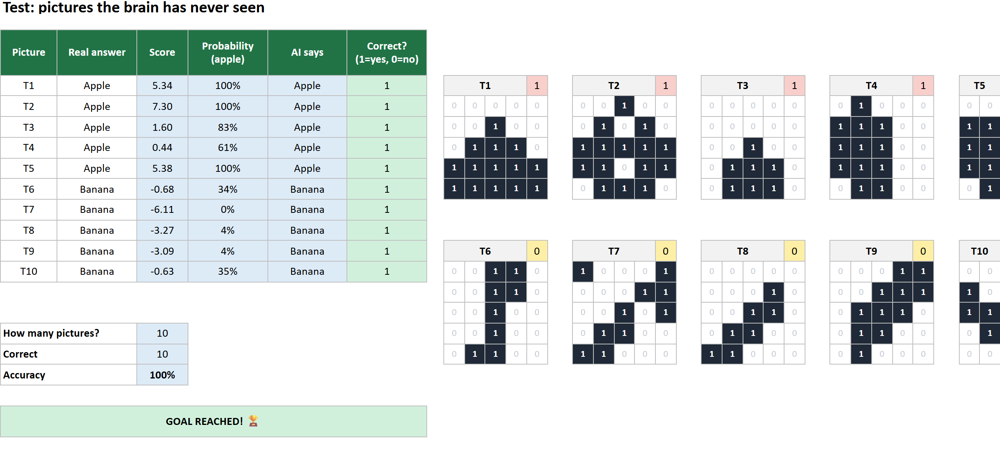
Which new training pictures help most?
9Think about it
- Why did the brain fail on some test pictures when it knew all training pictures?
- Why did adding differently-drawn pictures help? How is that like the Fix Pack in Phase 1?
- What happens with learning rate 5 and the 4 extra pictures? Why?
- How is this brain like Teachable Machine? How is it different?
- A banana drawn upright fools the brain. Real image AIs look for shapes anywhere in the picture. Why is that better?
Next stop: Phase 4 — Detective Map: how an AI decides, shown on a map.
⭐ Challenge
- Reach 100% on the test with only the 4 extra pictures.
- Draw a picture that makes the brain say Apple with more than 90% although it is a banana.
- Find the learning rate that reaches 0 mistakes in the fewest rounds.
Words to know
| English | العربية | עברית |
|---|---|---|
| pixel | بكسل | פיקסל |
| weight | وزن | משקל |
| bias | انحياز | הטיה |
| score | نتيجة | ציון |
| probability | احتمال | הסתברות |
| learning rate | معدل التعلّم | קצב למידה |
| round (epoch) | جولة | סיבוב |
| loss | خسارة | הפסד |
| train | تدريب | אימון |
| test | اختبار | מבחן |
Questions
The Brain sheet says “fill the Learn sheet first”.
You have not typed the formulas on the Learn sheet yet (or not filled them down to row 199).
I see #NAME? or #REF!.
A sheet name in a formula is wrong. Click the cell on the sheet instead of typing the sheet name.
My numbers differ a little from the guide.
If you changed a picture or the learning rate, the numbers change. That is correct.
Can I use Google Sheets?
Yes for the formulas, but the colours and charts may look different. Excel is recommended.